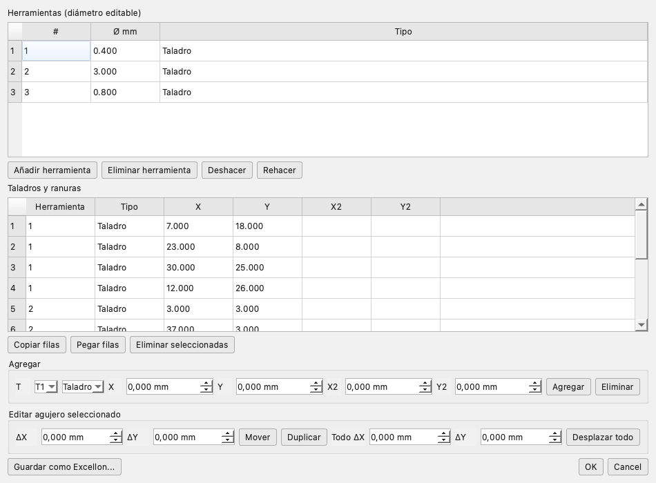

Edición
Editores, transformaciones y operaciones
FlatCAM C++ incluye editores para Gerber, Excellon y geometría, además de transformaciones y operaciones booleanas con deshacer/rehacer.
Deshacer y rehacer
Las entradas numéricas aceptan coma o punto como separador decimal y lo normalizan a punto. Supr o Retroceso sobre el árbol del proyecto elimina el objeto después de pedir confirmación. Las pestañas de herramienta se cierran y vuelven a Proyecto; la lengüeta Herramienta de una capa generada incluye Generar G-code. Todo cambio de objeto, transformación o edición interna se registra en la pila de undo. Usá Ctrl + Z y Ctrl + Y, o los botones de la barra. Los editores tienen además su propio undo interno mientras están abiertos.
Transformaciones
| Operación | Cómo | Parámetros |
|---|---|---|
| Mover | Herramienta → Mover objeto | ΔX, ΔY. |
| Centrar objeto | Objetos → Centrar objeto en (0,0) | El centro del objeto queda en el origen. |
| PCB a origen | Objetos → Llevar toda la PCB a (0,0) | Esquina inferior izquierda de toda la PCB en (0,0). |
| Transformar | Editar → Transformar | Mover, rotar, escalar; previsualización. |
| Alinear | Herramienta → Alinear objetos | Contra origen u otro objeto, 6 posiciones. |
| Espejar / doble faz | Herramienta → Doble faz | Eje X/Y y offset. |
| Compensación de grabado | Herramienta → Compensación | Buffer positivo/negativo. |
| Invertir | Herramienta → Invertir | Resta el cobre de una caja con margen. |
| Simplificar | Editor de geometría / operaciones | Tolerancia. |
| Buffer | Editor / operaciones | Distancia y estilo. |
Operaciones booleanas
Herramienta → Operaciones booleanas combina el objeto seleccionado con otro:
- Unión: suma las áreas.
- Diferencia: resta el segundo del primero.
- Intersección: conserva sólo el solapamiento.
- Unir objetos: combina varios objetos en una capa.
- Explotar: separa un objeto en sus componentes.
El objeto B se oculta y la operación es reversible con undo.
Editor Gerber
Objetos → Editor Gerber. Permite trabajar por primitivas:
- Lista de sólidos y recorridos con área, largo y límites.
- Selección múltiple.
- Mover, duplicar, eliminar, rotar y escalar.
- Agregar círculo, rectángulo, línea o arco.
- Simplificar o aplicar buffer a la primitiva.
- Operaciones booleanas entre primitivas.
- Ver y editar aperturas; editar macros
AM. - Guardar como Gerber.
Al aceptar, el objeto se reconstruye desde el archivo fuente cuando es posible; si no, se usa la geometría editada. El área del árbol y el canvas se actualizan.
Editor Excellon

| Acción | Detalle |
|---|---|
| Herramientas | Agregar/eliminar, diámetro editable. |
| Taladros/ranuras | Tabla con T, tipo, X, Y, X2, Y2. |
| Agregar | Elegí herramienta y tipo; completá coordenadas. |
| Mover | ΔX/ΔY sobre la fila seleccionada. |
| Duplicar | Copia con offset. |
| Copiar/pegar filas | Selección múltiple; pega con offset. |
| Desplazar todo | Mueve todas las coordenadas. |
| Guardar como Excellon | Exporta el resultado editado. |
Editor de geometría
- Lista contornos exteriores, agujeros y recorridos.
- Tabla de vértices editable: agregar, eliminar y mover.
- Se descartan contornos con menos de 3 puntos.
- Al aceptar se reconstruye la geometría GEOS y se actualiza el canvas.
Editor de G-code
Doble clic en un objeto del grupo G-code abre el editor con resaltado de comentarios, G/M/T, coordenadas, F y S. Se puede buscar, editar y guardar. Los CNCJob generados incluyen al inicio un comentario con postprocesador, unidades, diámetro, avances, Z, husillo o potencia láser, pasadas y parámetros propios de la operación. El botón Guardar escribe el archivo (pide ruta la primera vez). El editor no valida la sintaxis de la máquina.
Editor de fuente
Objetos → Editor de fuente abre el Gerber/Excellon original. Al guardar, FlatCAM lo reprocesa y actualiza geometría, área, tabla de taladros y visor. Es útil para corregir un archivo sin salir de la app.
Scripts y documentos
Los objetos Script/Document/CNCJob tienen editor de texto. Los scripts JavaScript se ejecutan con Archivo → Ejecutar script o desde el editor; los documentos se guardan con el proyecto.